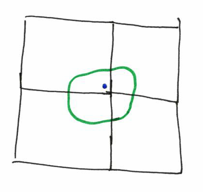

Converting a regular carto project to vector tiles
OSM-carto case study
Rory McCann www.technomancy.org
Geofabrik geofabrik.de
OpenStreetMap Carto style
- Main main on openstreetmap.org
- Style has been grown for years
- Ported to CartoCSS by Andy Allen in 2012
- Probably one of the most complicated CartoCSS styles
Goal
Same output (raster images over HTTP), but served behind with vector tiles
Not client side JS / Open GL rendering
To allow one to make minor tweaks to the style without having to host a whole new style
E.g. Change language names to always show English names
Turn off all POIs
How do we render it?
Kosmtik can render a vector tiles project into images-over-HTTP
tilelive - collection of libraries for rendering & serving tiles
tessera - command line tilelive-based tool for serving tiles.
Step #1 - Split the project into two
OSM-carto is just one project with a project.yaml
Vector tiles are 2 projects, source and style
osm-carto.tm2source and osm-carto.tm2
Source project - osm-carto.tm2source
Directory with one file: data.yml (NB: .yml not .yaml)
Copy the project.yaml
Remove the top level source and styles keys
Set maxzoom: 14
Style project - osm-carto.tm2
Directory with: project.yml (NB: .yml not .yaml)
Copy the project.yaml
source is URLish to you tm2source project
All Layers only have the id
All .mss style files.
Done?
ha!
😟
Results
Results

No carto classes - ergo no roads

No carto classes
You can't use carto classes - only ids - to filter
Rewrite style to only use #id instead of .class filters
Not so bad for osm-carto
Lots of classes map 1:1 to layer ids anyway
Solved!
Borders and polygon labels
Polygon border is drawn inside the polygon
Buffer
Common problem in vector tiles
Each line/polygon has been clipped to the vector tile
Can only see data inside your tile
Except sometimes you need to see outside your tile
Or you can't render properly
Polygon border
It's a polygon (green). We want to draw a border.
It is spread across many vtiles (black)
Polygon border
Each tile rendered separately
Border of the polygon is rendered at polygon borders
Polygon border
Result, border inside the polygon
Solution - buffer-size
Add buffer-size: $PIXELS to each data layer properties
Increases amount of data in layer to go outside vector tile border
Solution - buffer-size
Polygon now goes outside the image, border still draw.
But results are clipped out of final image
Solution - buffer-size
Value can be small (~4) for polygon boundaries
Large (~128) for label placement
Anothe Solution - ST_Boundary
Or change SQL to return the boundary as a line, rather than drawing a polygon
ST_Boundary(way) as way
I do this for the text around admin borders, to reduce data in vector tile
Be careful of indexes (see later)
Polygon label
Polygon label
Want to place a label for (green) polygon which is split by (black) tiles. non-vector tiles, mapnik picks a point (blue) and puts label there
Polygon label
Polygon split at vtile borders
mapnik picks a point (blue) and puts label there
Problem: Centroid of a polygon
e.g. Labels for names, addresses, icons.
In raster tiles, using meta tiles, mapnik has the polygon, and can place the centroid once
Vector tiles: Each tile is separate render, each tile has its own polygon
Problem: Each tile will have a label in the middle
Solution: Change SQL to return a point, not a polygon
i.e. Have PostgreSQL, not Mapnik, convert the polygon to a point
You now have a point layer, and mapnik puts the label there
Only one point per polygon, regardless of how many v. tiles the polygon is on
SQL
ST_Centroid(way) AS way: Geometic centroid
ST_PointOnSurface(way) AS way: Point will be inside polygon
Centroid is about 4 times faster, but PointOnSurface is more "correct"
Problem: Indexes
"Give me buildings in this bbox" → PostgreSQL can use geom index
"Give me ST_Centroid(way) in this bbox" → PostgreSQL cannot use index
Solution: Use an Index
Add AND way && !bbox! to WHERE clauses
Makes PostgreSQL filter based on the way column, and use the geom index
Or you can CREATE INDEX on ST_Centroid(way)
Problem - Clipped labels
Problem - Clipped labels
We have label (blue) in just one tile
Problem - Clipped labels
Where the name should be drawn
Problem - Clipped labels
Split across tiles. Only drawn in one tile
Problem - Clipped labels
Result - clipped label
Solution - Large buffer for label points
Larger buffer (128?) for the labels so other tiles get the label text
Fixes
- Buffer for polygon borders
- Change SQL to convert polygon to point in PostgreSQL
- Change SQL to include
!bbox!for index usage - Large buffer for label point layer
Buffer for lines too
Buffer for lines for end cap
Buffer for line labels (e.g. road/ref labels) (but don't need to convert lines to points in SQL)
Zoom level
Data is being simplified
Fine for normal zoom level, but z15+ uses z14 data
Simplification is too much
Solution - maxzoom
maxzoom: 14 in tm2source
When a z14 vector tile is generated, no data simplification will happen
z14 tile is more detailed than it needs to be for z14
But detailed enough for a z18 tile
Initially I tried to use symlinks as a hack to vector-tile-ify this and use the same project.yaml for both the source & style
But source and style need different maxzoom.
Source needs maxzoom: 14 to prevent simplification
Style with maxzoom: 22 to generate tiles in z15-22
All data needs to be at z14
Each layer in the source has a minzoom
Needs to be minimum of 14
In OSM-carto some is minzoom: 17
Otherwise data won't be included in z14 tile, which is uses to render z15+ tiles
Change all minzoom in your source to be minzoom: 14 at minimum
Style can still filter on zoom for display purposes ([zoom>16])
Problem: way_pixels
osm-carto uses way_area/NULLIF(!pixel_width!::real*!pixel_height!::real,0) to get "display size" of polygons.
Only draw things over a certain display size. Style can be zoom level independent
way_pixels different on each zoom level.
z15+ tiles are based on z14 tiles, and z14 way_pixels are no good for z15+ style
Solution: New per zoom way_pixels
Manually change style: [zoom >= 10][way_pixels > 3000], [zoom >= 17] {
New [zoom >= 10][way_pixels > 3000], [zoom=14][way_pixels > 3000], [zoom=15][way_pixels > 750], [zoom=16][way_pixels > 187], [zoom >= 17] {
Minor: way polygon type on planet_osm_polygon
With default osm2pgsql database, node-mapnik will do something strange and silly
Tries to autodetect geometry type by running the query and looking at first 5 rows
No bbox filtering, runs query globally
SELECT all buildings ORDER BY way_area DESC LIMIT 5
This is slow
Solution - Change geometry type
ALTER TABLE planet_osm_polygon ALTER COLUMN way TYPE geometry(MultiPolygon, 900913) USING ST_Multi(way);
Have a osm2pgsql fork which imports as MULITPOLYGON
openstreetmap-carto-vector-tiles
Thanks for listening
Code has been released on GitHub
Will try to keep it updated with upstream style (no guarantees)